01
Food & Beverage
Explore →Processing lines, brewing, beverage production and hygienic equipment systems.
FOR CANADIAN HYGIENIC-PROCESS SYSTEMS
Technical supply solutions in 304L / 316L stainless steel tubing for hygienic and clean-process projects.
Yongxin supplies stainless steel sanitary welded tubing to ASTM A270 or your specified requirements. Share your grade, OD, wall thickness, length, finish, quantity and document requirements for a technical review and quotation based on your purchase specification.
01 / PRODUCT & APPLICATIONS
Specified for the process. Supplied for the project.
Share your grade, dimensions, finish and documentation requirements. We will help define the ASTM A270 tubing scope before production.
Send your requirement →APPLICATION FIT
Move over a card to view the typical application focus.
Processing lines, brewing, beverage production and hygienic equipment systems.
Sanitary piping requirements for dairy processing and nutrition applications.
Pharmaceutical, biotech, purified-water and related clean-process systems.
02 / ASTM A270 & SPECIFICATIONS
ASTM A270 provides the technical starting point. Use the availability table below to identify a size, then confirm the complete supply scope with your RFQ.
Available in 304L / 316L. Final dimensions, finish, testing and documentation are confirmed against the agreed purchase specification.
Specify the grade required for your process and corrosion conditions.
Reference the nominal size and outside diameter in the table below.
Available wall thickness varies by outside diameter.
CATALOGUE AVAILABILITY
Catalogue availability for ASTM A270 sanitary tubing. Select the relevant size range, then confirm the complete purchase specification with your RFQ.
| Nominal size | OD | Catalogue wall range |
|---|---|---|
| 3/4 in | 19.1 mm | 0.5–2.0 mm |
| 1 in | 25.4 mm | 0.5–2.5 mm |
| 1 1/4 in | 31.8 mm | 0.5–2.5 mm |
| 1 1/2 in | 38.1 mm | 0.6–2.5 mm |
| 2 in | 50.8 mm | 0.7–2.5 mm |
| 2 1/2 in | 63.5 mm | 0.7–3.0 mm |
| 3 in | 76.2 mm | 0.8–3.0 mm |
| 3 1/2 in | 88.9 mm | 1.0–3.0 mm |
| 4 in | 101.6 mm | 1.0–3.0 mm |
| 4 1/4 in | 108.0 mm | 1.2–3.5 mm |
| 5 in | 127.0 mm | 1.2–3.5 mm |
| 5 1/2 in | 139.7 mm | 1.5–3.5 mm |
| 6 in | 152.4 mm | 1.5–4.0 mm |
| 6 1/4 in | 158.7 mm | 2.0–4.0 mm |
| 8 in | 203.2 mm | 2.0–4.0 mm |
| 10 in | 254.1 mm | 2.5–4.0 mm |
| 12 in | 304.8 mm | 2.5–4.0 mm |
03 / MANUFACTURING & QUALITY
We manufacture sanitary tube to the agreed grade, size and surface requirements, then confirm the required inspection scope before packing and dispatch.
Follow the route from precision welding to bright annealing, weld-bead finishing, polishing and pickling.
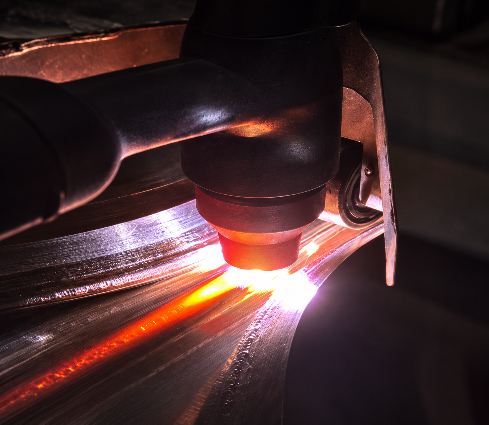
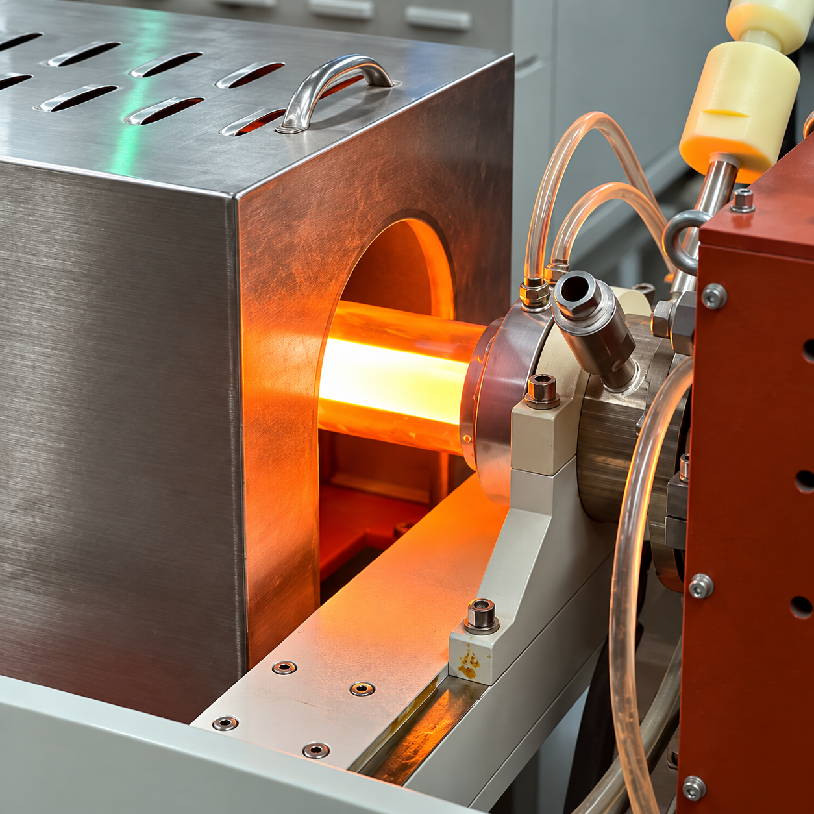
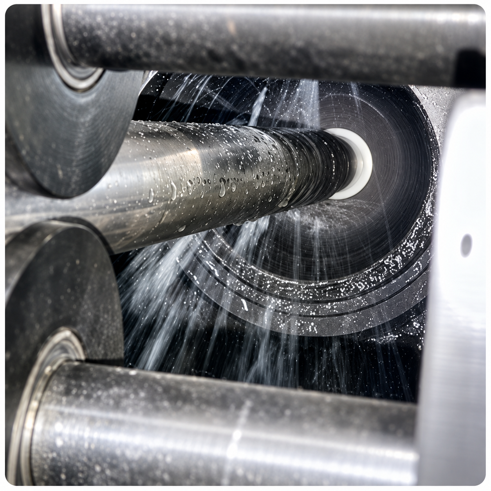
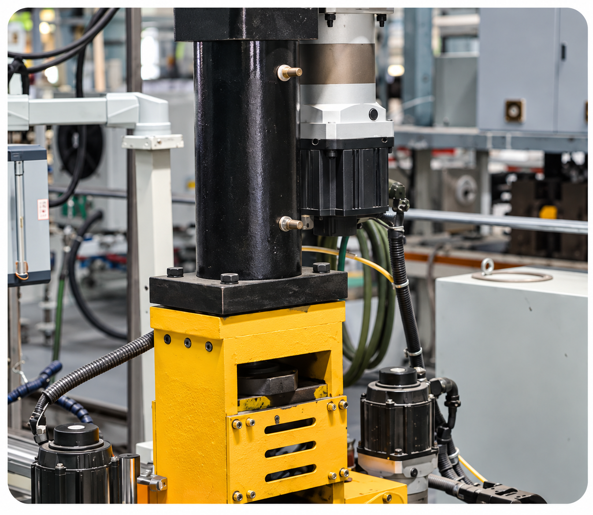
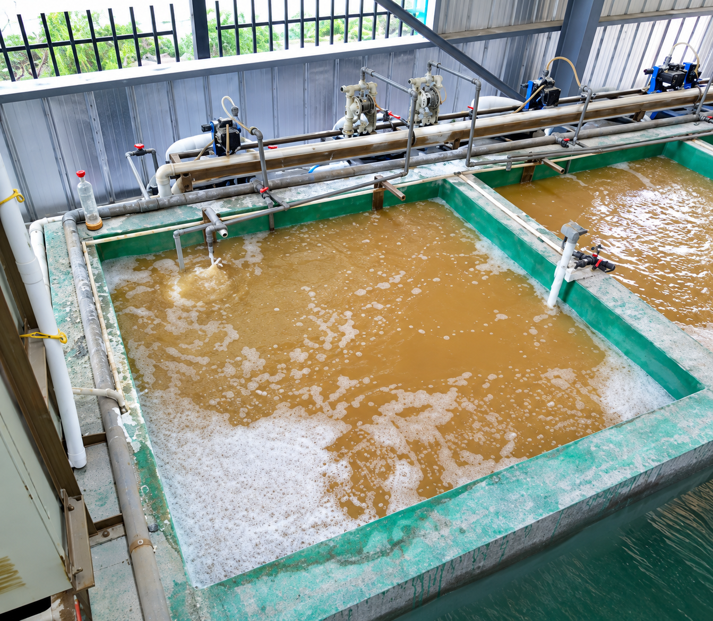
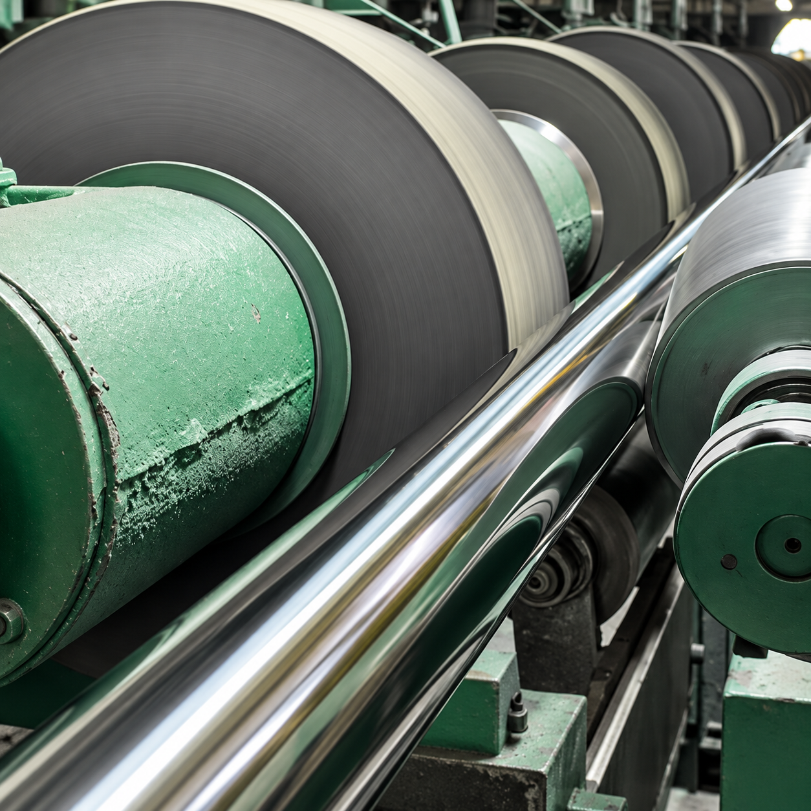
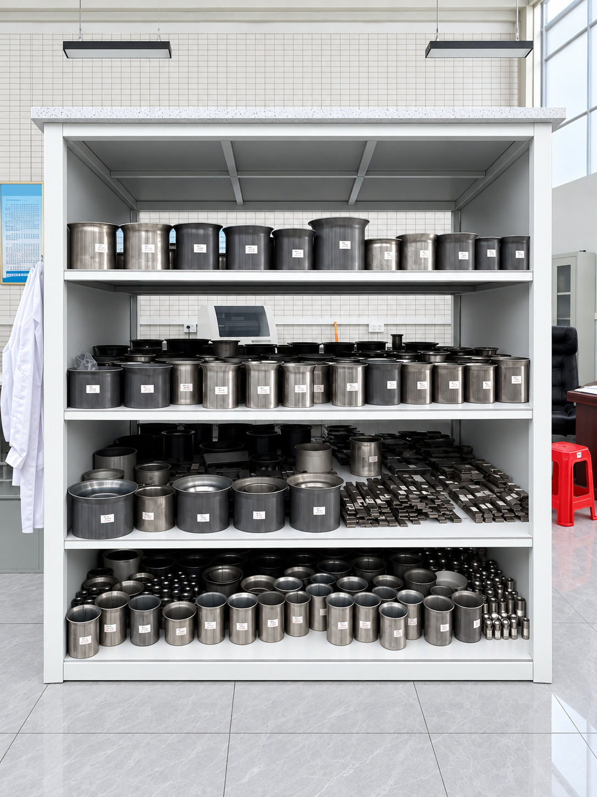
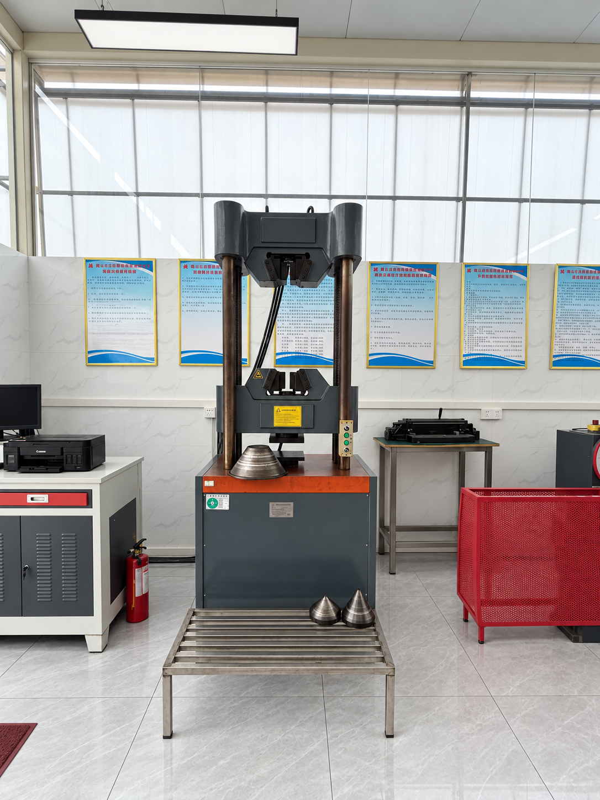
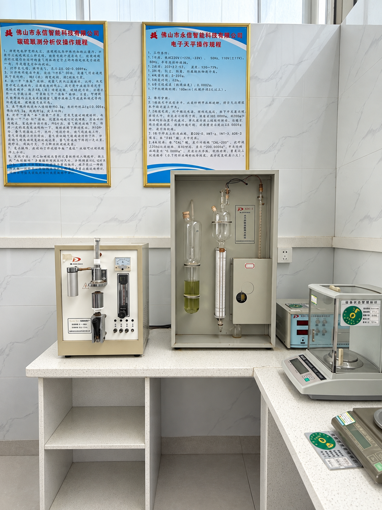
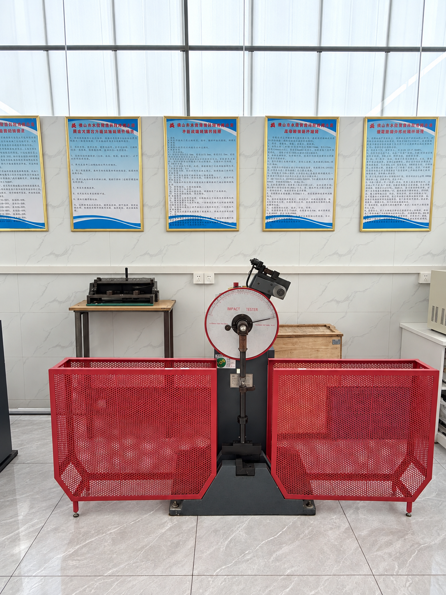
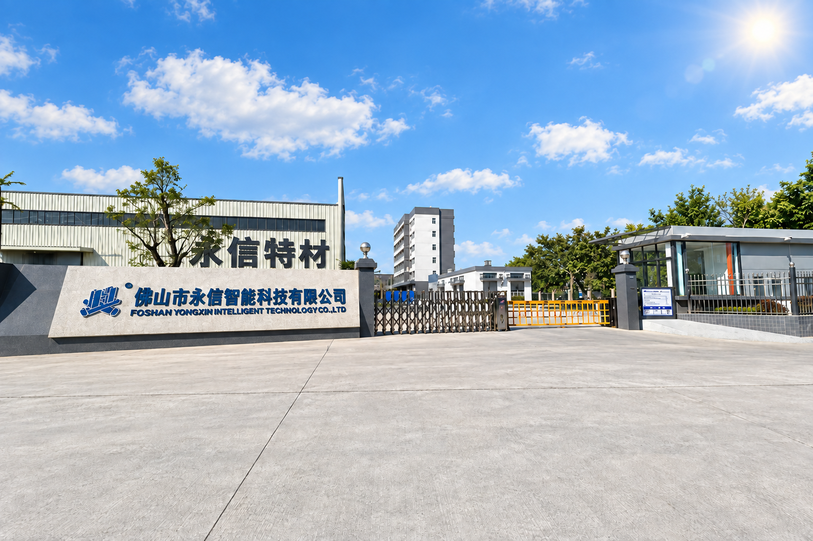
04 / COMPANY & FACILITY
Foshan Yongxin Intelligent Technology Co., Ltd.
佛山市永信智能科技有限公司Yongxin produces stainless steel sanitary tubing for hygienic-process projects, connecting specification alignment, manufacturing coordination and quality-focused delivery.Share your tubing specification and project priorities. We will help define the next step.
Talk to Yongxin →05 / CERTIFICATIONS & COMPLIANCE
For ASTM A270 sanitary-tubing projects, certification and document requirements should be agreed before production. The relevant document set is confirmed with your RFQ.
Certificate scope and current validity are confirmed with your RFQ.
Request a Quote →06 / FAQ
Clear the key commercial and technical details before submitting your requirement.
Go to technical quotation →Yes. Specify ASTM A270, the required grade, OD, wall thickness, length, finish and end condition for your application.
Catalogue sizes range from 3/4 in to 12 in OD, with wall availability varying by OD. Minimum order quantity is confirmed against the required size, quantity and supply plan.
Typical production lead time is around 30–45 days. For samples or trial orders, send your grade, dimensions, finish and application so the available scope can be reviewed.
State the required documents, test scope and acceptance standard in your RFQ. Material, inspection and certificate coverage are confirmed against the agreed supply scope.
Please provide the application, standard, grade, OD, wall thickness, length, quantity, finish, inspection and document requirements, plus the delivery destination.
07 / TECHNICAL QUOTATION
Send the project details you have. We will review the tubing scope and respond with the information needed for a technical quotation.